Enforcing Correct Reasoning in LLMs via Reinforcement Learning
Project Overview
In the Reinforcement Learning with Verifiable Rewards (RLVR) training approach we add an extra reasoning-based reward to the learning process. In this project, a student language model learns to solve problems with feedback not only on whether its final answer is correct, but also on the reasoning it used (when applicable). A larger teacher LLM oversees training: the teacher model provides reasoning-based feedback. This means the student is rewarded for correct answers (and proper answer format), but it also gains additional reward if the reasoning somewhat sound in itsefl. By verifying reasoning in each attempt, our training pipeline encourages the student model to develop correct step-by-step problem-solving skills, not just lucky guesses.
Training Pipeline
The RLVR training pipeline we proprose updates the student LLM using multiple feedback signals with guidance from a larger model. For each training query (in our case, a math problem), the student model generates a solution with a chain-of-thought. We then evaluate the student’s output on three aspects:
- Accuracy of the answer: Did the student get the correct final answer? This yields a primary reward signal (positive if correct, zero/negative if incorrect).
- Format compliance: Does the response follow the required format or instructions (e.g. showing reasoning steps and a neatly formatted answer)? If the output is well-formatted, the student earns additional reward for following instructions properly.
- Reasoning quality (Our Addition): When the optional reasoning-based reward is enabled, the teacher LLM reviews the student’s chain-of-thought for logical soundness and completeness. • Method 1 (computationally cheaper): the teacher inspects reasoning only if the final answer is correct, saving compute and avoiding noisy feedback on wrong answers. • Method 2 (computationally more expensive): the teacher inspects reasoning for every sample, regardless of correctness, providing richer but costlier feedback. A solution earns extra reward from this step only when its reasoning is coherent and valid.
These reward components are combined to adjust the student model’s policy via reinforcement learning (using a method like GRPO, a variant of PPO). In simple terms, the student gradually learns to maximize these rewards, which means learning to produce accurate, well-formatted, and (when required) well-reasoned answers. Over many training iterations, this pipeline aligns the student model’s behavior with the desired outcomes and reasoning process, guided by feedback from the teacher model on successful solutions.
Baseline Setup
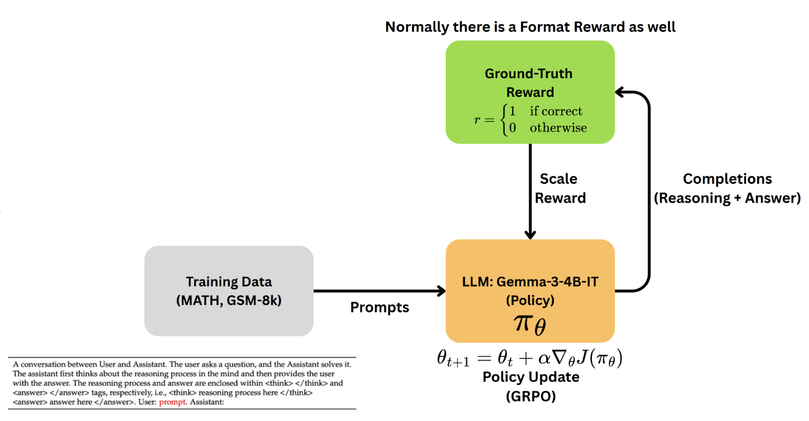
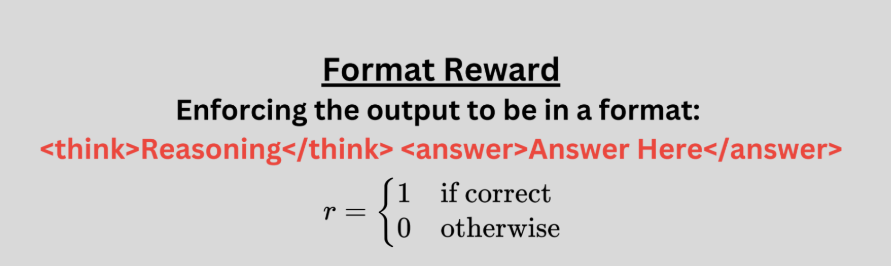
Format Correctness ✓
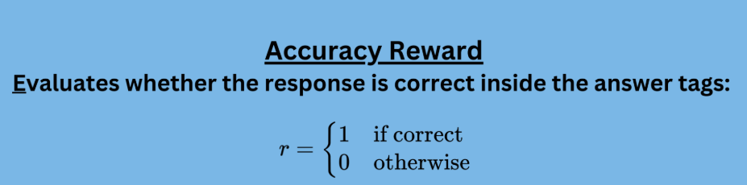
Answer Accuracy ✓
As a baseline, we first train the student model with only accuracy and format-based rewards, without any reasoning feedback. In this setup, the reinforcement learning reward function simply checks if the final answer is correct and if the answer is presented in the proper format. The student gets positive feedback for answering correctly and adhering to the expected answer style or format (and zero or negative feedback otherwise). There is no evaluation of the content of the reasoning steps in this baseline. This approach mirrors the strategy used in prior works like DeepSeek-R1 and DeepSeek-MATH, which relied solely on outcome-based rewards (correct answer and format compliance) to improve the model. The baseline establishes how well the model can do with only those basic signals, serving as a point of comparison for our enhanced method.
Our Model and Proposed Reward Components
Our model extends the baseline by adding a reasoning-correctness reward on top of the accuracy and format signals. A teacher LLM inspects the student’s chain of thought and assigns a score using one of two modes:
- Method 1 (Computationally Cheaper): The teacher is called only when the final answer is correct. This limits compute and avoids noisy feedback on wrong answers. Reward scale → { 1 fully correct | 0.5 some valid steps | 0 mostly wrong }.
- Method 2 (Computationally Expensive): The teacher is called on every output, granting partial credit even if the answer is wrong. Reward scale → { 1 answer & reasoning correct | 0.66 answer correct but gaps | 0.33 answer wrong but some valid steps | 0 largely wrong }.
This additional signal helps the student learn more from each example, improving sample efficiency—especially on harder tasks such as challenging math problems. Over time, the model is encouraged to produce not just correct answers, but correct answers backed by sound reasoning.
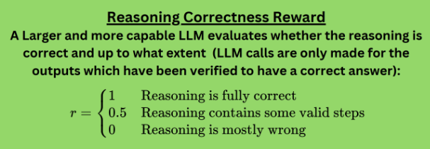
Reasoning Correctness ✓✓
Experimental Setup
For our experiments, we fine-tuned a medium-sized language model using the RLVR approach and the baseline for comparison. Below are the key training details for reproducibility:
- Base Model: We started with Gemma-3-4B-IT, a 4-billion-parameter instruction-tuned model. We set up two separate fine-tuning runs: one on the GSM8K math word problem dataset, and another on the MATH competition problem dataset. This allows us to evaluate performance on each dataset independently.
- Training Duration: Each model was trained for roughly 1,000 RL optimization steps. This is a relatively short training schedule, leveraging the strong pre-trained foundation of Gemma-3-4B-IT and the focused reward signals to quickly improve reasoning ability.
- Batching and Sampling: We used a batch size of 1 (one problem prompt at a time). However, for each prompt, the model generated 6 different solution attempts in parallel. We employed the GRPO (Group Relative Policy Optimization) strategy, which means the rewards of these 6 samples were compared to each other. By ranking the samples from best to worst (according to the reward function) and updating the policy to favor the higher-reward ones, we achieve a stable training signal without needing a separate value function. This multi-sample approach helps the model learn from comparative feedback on each question.
- Reward Computation: The reward for each sample was computed based on the criteria described above (accuracy, format, and reasoning for the RLVR model). Only the final answer’s correctness and format mattered for the baseline; the RLVR model also got the extra reasoning score from the teacher when applicable.
- Regularization (KL Penalty): To ensure the fine-tuning doesn’t push the model too far from its pre-trained behavior (which could cause instability or loss of general language ability), we added a small Kullback–Leibler (KL) divergence penalty. We set β = 0.001 for this KL regularization term. In practice, this gently constrains the updated policy to stay close to the initial model’s output distribution, preventing the student from going off-track due to the narrow reward signals. This technique is common in RL fine-tuning (analogous to what’s done in RLHF) and helps maintain output quality and diversity.
Dataset Used:
- GSM8K (Grade School Math 8K): is a dataset of 8.5K high quality linguistically diverse grade school math word problems. The dataset was created to support the task of question answering on basic mathematical problems that require multi-step reasoning.
- MATH Dataset: The MATH dataset is a collection of mathematics competition problems designed to evaluate mathematical reasoning and problem-solving capabilities in computational systems. Containing 12,500 high school competition-level mathematics problems, this dataset is notable for including detailed step-by-step solutions alongside each problem.
In summary, our experimental setup fine-tunes a 4B parameter model on two math-focused benchmarks with a novel reward scheme. We generate multiple solutions per prompt (using GRPO) and apply a slight KL regularization, which together ensure efficient and stable training under the RLVR framework. We trained and evaluates our models separately on two datasets i.e., MATH and GSM8k
Results GSM-8K
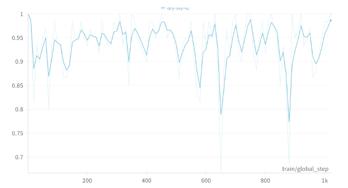
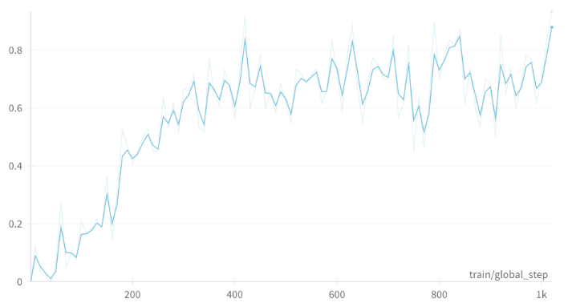
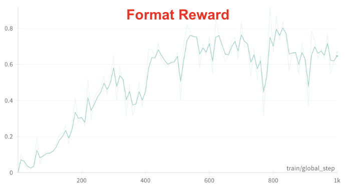
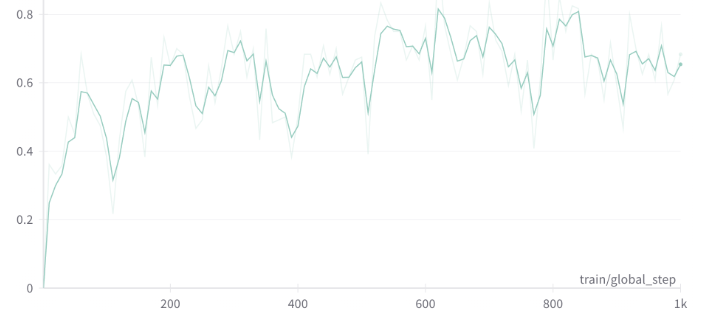
Results Math
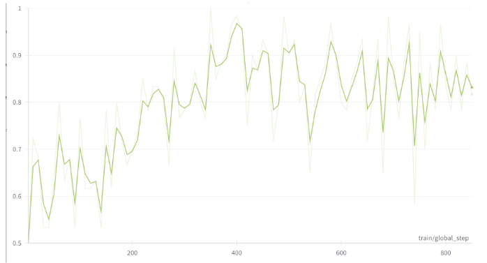
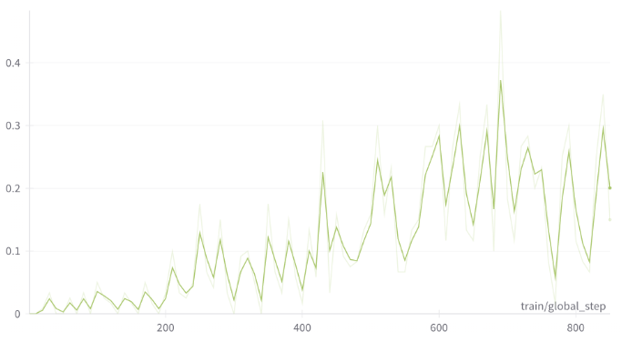
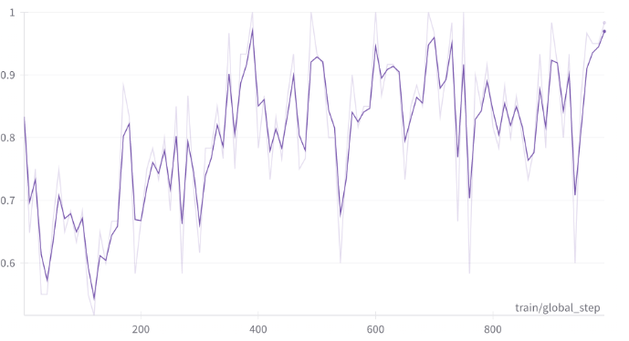
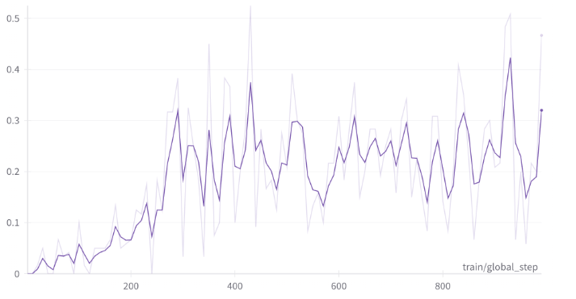
| Model | MATH‑500 | GSM‑8K |
|---|---|---|
| Gemma‑3‑4B‑IT (init) | 10.71 % | 25.57 % |
| Baseline RLVR | 27.32 % | 78.92 % |
| Our full RLVR | 33.11 % | 81.31 % |
Takeaways
Our experiments yield two main take-aways:
- Higher sample-efficiency on the MATH dataset. Both reasoning-reward variants out-learn the baseline, and the always-on check in Method 2 converges quickest. We do not see a similar trend for GSM-8K and we mainly believe that is the case as GSM-8K is comparatively much easier and the base model (Gemma-3-4B-IT) is already capable of solving most of the questions in it out-of-th-box.
- Better generalization through stronger reasoning. Encouraging logically sound chains-of-thought produces models that transfer more robustly to held-out problems, as seen in the accompanying plots and accuracy table.
Discussion & Future Work
While reasoning rewards markedly improve performance, there is still room to enhance robustness and efficiency. One important direction for future work is improving out-of-distribution generalization: we want the student model to handle problems that differ from the training set. This could be achieved by curating a more diverse set of training tasks or using curricula that expose the model to a wide variety of problem types and difficulty levels. By broadening the training distribution, the model can learn more general reasoning skills and avoid overfitting to narrow patterns.
Another area to address is the compute cost associated with using a large teacher model for feedback. To reduce overhead, we could develop cheaper reward approximators – for example, training a smaller auxiliary model to mimic the teacher’s reasoning evaluation. Such a reward model, once trained, could quickly judge the student’s reasoning without needing to call the full teacher LLM every time. This would make the RLVR training loop more efficient. Additionally, we can explore dynamic teacher usage strategies: instead of invoking the teacher on every correct answer, the training could adaptively decide when the teacher’s input is truly needed. For instance, in early training the teacher might be used frequently to guide learning, but as the student improves, we might consult the teacher only on particularly challenging or novel problems. This selective guidance can maintain the benefits of reasoning feedback while cutting down the number of expensive teacher model calls.
In summary, future improvements may come from making the reward mechanism more efficient and ensuring the training data/strategy encourages broad generalization. Techniques like using distilled reward models, diversifying training examples, and smartly adjusting when to involve a teacher model are promising research directions to make reinforcement learning with LLMs both more powerful and more practical.
Team & Resources
Tarun Sharma, Arjun Shriyesh Chandra, Tanmay Dhadhania